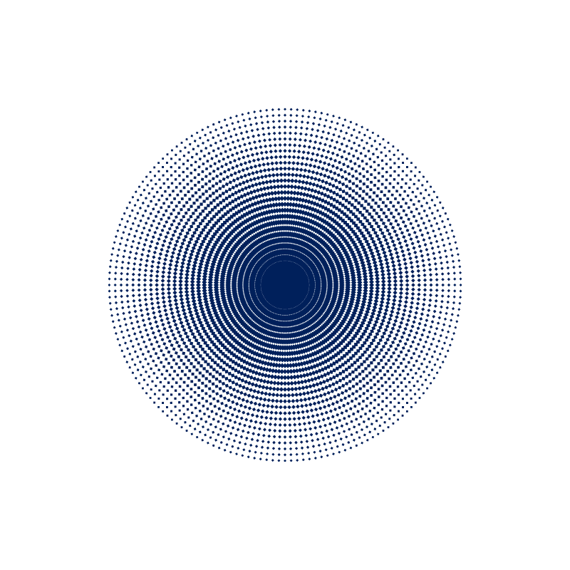

Ce site a été conçu dans le but d’être accessible au plus grand nombre.
Nous nous efforçons de respecter les bonnes pratiques d’accessibilité web, notamment les recommandations issues des WCAG (Web Content Accessibility Guidelines).
- Structure claire des pages (titres, sections)
- Textes lisibles avec contraste suffisant
- Navigation simple et intuitive
- Compatibilité avec les supports mobiles
- Ajout de descriptions alternatives sur les images lorsque possible
Malgré notre vigilance, certaines parties du site peuvent présenter des défauts d’accessibilité.
Si vous rencontrez une difficulté d’accès à un contenu ou à un service, vous pouvez nous contacter afin que nous vous proposions une alternative :
Email :
mondessubtils@yahoo.com
Nous nous engageons à vous répondre dans les meilleurs délais.